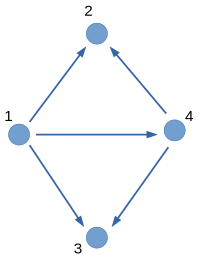

1. 拓扑空间
Mar. 6 2019
希望您不会被这些陌生的词汇吓到．日常使用的中文里少见「拓扑」一词，其字面意思我们也琢磨不透，但它的含义其实很简单．「拓扑学」的英文是 Topology，日文是「位相幾何学」，它的研究对象是一种带有特殊结构的集合．这种结构 描绘了集合中点与点的相对位置关系（邻近 关系），集合也因此具有了形状．这样的集合被称作「拓扑空间」（注意下面定义中 与 的区别！）:
定义 1. （拓扑空间 via 邻域系统） 一个 拓扑空间 是一个集合，并且对于其中任何一个点 存在一族子集 （后者是 的 所有 子集构成的集合，被称作 幂集）．其中每个子集都描述了 中的点与 的一种接近程度，它们满足以下要求:
- 点 含在所有这些子集中: ，．
- 这族子集是 上封闭 的: 若有某个 使得 ，则 为了避免 为空的情况，特别要求 ．
- 这族子集在 有限交 下是封闭的: ．
- 例 1. （实数） 实数 在分析学中是一个非常重要的构造（它的具体构造我们暂且不用在意），通过计算两点之间的距离（两个实数之差的绝对值），我们可以得到一种非常自然的描述接近关系的方式．「一个点 与 足够接近当且仅当它们的距离小于某个给定的正数」，也就是说我们可以借助一系列 开球 来构造 的邻域系统： 这使得 成为了一个拓扑空间．
邻域系统可以说是拓扑空间里最基本的概念．Neighborhood systems are exactly how we encode ‘closeness’ in a space．借用邻域系统，我们可以谈论在拓扑空间中谈论「区域」:
- 定义 2. （开集） 是拓扑空间 的一个子集．若对 中任何一点 ，足够接近 的点都在 中，则称 为一个开集．确切地说：
是开集 对 中任意点 而言，其 邻域系统 中总有一个邻域 含于 . 开集的补集被称为 闭集．特别地，当某个邻域 是开集的时候，我们称之为 开邻域．
- 例 2. （开区间） 在 中，开区间 就是一个开集．
- 练习 1. 验证 是一个拓扑空间，并验证 是一个开集．这告诉我们 是一个闭集．但 中的子集并不是除了开集就是闭集，例如 就既不是开集也不是闭集．所以当我们发现一个集合不是开集后，它不会自动变成一个闭集…
若您动手验证了上面两个例子，您一定会注意到以 为中心的开球似乎完全提供了整个基于 的邻域系统的信息．这样的一族集合被称为：
定义 3. （邻域系统的基） 一族子集 满足：
- ．
- 在有限交下封闭．
- 练习 2. 可以将 定义 2 中的 邻域系统 换成 邻域基 吗？
给邻域基添加一些集合使之 上封闭，我们就能得到一个邻域系统．所以其实我们也可以用邻域基来定义拓扑空间．
定义 4. （拓扑空间 via 邻域基） 若对于 中每一点 都存在一族子集 满足：
- 含在所有这些子集中：，．
- 在 有限交 下封闭．
显然有了邻域基我们就可以定义邻域系统，所以 定义 4 和 定义 1 都可以作为拓扑空间的定义，它们都是通过描述「局部性质」来定义拓扑空间．我们也可以通过描述「何为区域」来定义拓扑空间，这就是拓扑空间最常见（但更抽象）的定义方式了：
定义 5． （拓扑空间 via 开集） 若 是一个集合， 是一族子集（），满足：
- 全空间与空集都是「区域」：.
- 「区域」的 有限交 是「区域」：．
- 「区域」的 任意并 是「区域」：，则 ．
练习 3. （Fun with 开集） 通过邻域系统或者邻域基所定义的开集满足 定义 5 的条件吗？请验证：
- 与 都是开集．（？）
- 开集的有限交是开集．
- 开集的任意并是开集．
若我们通过 定义 5 得到了一个拓扑空间和一族开集．对于点 ，我们可以这样定义它的邻域系统：
当然，包含 的所有开集也可以作为一个邻域基．
您可能会对「 是开集」这一命题感到奇怪．空集不是没有元素吗？怎么能说其中的元素都满足某种性质呢？这是个很有趣的问题，我的理解是「空集不空」，空集中其实有很多很多元素，只是在我们这个讨论范围内，它们都是不可见的．换句话说，空集中不含我们 讨论范围内 的元素，所以不存在讨论范围内的元素构成反例，所以空集是开集．这种 vacuous truth 是个有趣的哲学话题，我没有能力在这里深入讨论．
您当然也可以不管这种理由，直接将空集当作是开集．当您学得更深入之后，您会发现这样的定义很合理．Let me quote from Berlin:
How do we ever learn a truth, say that twice two equals four? At first it faces us like a brute fact. […] Only when he has learned the axioms and the rules of arithmetic does he realise that two times two not merely is four, but cannot be other than four.
— Freedom and Its Betrayal, Isaiah Berlin
经过 练习 3 的验证，我们可以放心地从两种不同角度（邻域系统、开集）来理解拓扑空间（三种定义的等价性详解见文末）．类似于邻域基，对于拓扑（定义 5）也可以定义 基 的概念，您可以在下面的例子中照葫芦画瓢．
例 3. （度量空间） 是一个集合， 是一个函数，若满足：
- 非负：.
- 不同的点能被区分： 当且仅当 ．
- 对称：．
- 三角不等式：．
则称 为 上的一个 度量（或度量函数）， 被称为 度量空间．通过里面的 开球（仿照 例 1），我们可以轻易地定义邻域系统、或者是拓扑．总之，度量空间是拓扑空间．
常见的度量空间有 维欧氏空间 ，欧氏空间的子集（将度量函数限制到其上即可）等．其实这基本上已经包含了我们所遇到的所有空间了．
- 例 4. （有向图） 一个有向图由一些端点和一些带方向的连接端点的边（箭头）构成．如下图：
 有向图的端点集（本例 ）其实也是一个拓扑空间．其中的开集定义为「没有从外面指向集合以内的箭头」这样的端点集．例如上图中的 以及 等．您可以试着从上图中找出一些闭集．
在 例 3 中提到了一种使子集成为拓扑空间的办法（度量函数限制到子集上）．这种方法其实对一般的拓扑空间都管用，我们一般这样定义子空间：
- 定义 6. （相对拓扑 & 子空间） 若 是一个拓扑空间，它的拓扑为 ， 是 的一个子集．则 上面可以定义 相对拓扑 ．一言蔽之，将区域的概念限制到 上即可．这样一来 就成为了一个拓扑空间．带有相对拓扑的子集被称作 子空间．
开集与闭集作为子空间都有相当简单的结构：
- 练习 4. （开子空间、闭子空间） 设 是一个拓扑空间， 是一个子集，请证明：
- 若 是开集，则在 的相对拓扑下的开集 恰好都是 中的开集．
- 若 是闭集，则在 的相对拓扑下的闭集 恰好都是 中的闭集．
子空间这个概念有什么特别的地方吗？若您以前对拓扑学的接触较少，可能会注意不到．「拓扑空间什么的全都是凭空的想象！」一个个的拓扑空间，其实全是独立存在于您的某种想象境界里的物体，是「你思故他在」．不是说二维球面 非要放在三维欧式空间里才成为一个二维球面，二维球面的拓扑来自他自己本身的性质．人类在飞上太空之前就不知道地球是圆的了吗？
而子空间这个概念，就是在描述不同的空间之间的一种联系．所以 可以在 中表示成这样的一个子空间 ，这样的结果应该使我们惊奇．
而一个空间如何被放入另一个空间？这就是下次的话题了．
For those who feel irked if without proofs…
好吧，我来证明一下用「邻域系统」、「邻域基」、「开集」都一样能定义拓扑空间．容我发挥一下人类最神圣的能力——命名．
假设 是一个集合．若 满足 定义 1 （领域系统），则称它为一个 -空间．类似，若满足 定义 4 （邻域基）则称之为 -空间．若 定义 5（开集），则 -空间．我们所需要证明的东西如下：
证明：
：对任意的 而言， 本身就是一个邻域基，所以 成为一个 -空间．
：当 中每个点都有邻域基后，按照 定义 2 定义开集即可得到拓扑 ，使 成为一个 -空间．
：当 有了一个拓扑之后，按照 练习 3 中的办法定义邻域系统即可让 成为一个 -空间．
所以这三种定义方式是等价的．